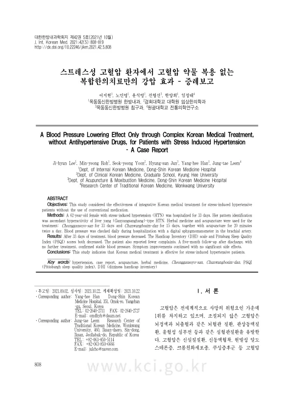

A Blood Pressure Lowering Effect Only through Complex Korean Medical Treatment, without Antihypertensive Drugs, for Patients with Stress Induced Hypertension - A Case Report
Lee Jh, Roh My, Yoon Sy, Jun Hs, Han Yh, Leem Jt
The Journal of Internal Korean Medicine 42(5):808-819

첫 장 · 오픈액세스First page · open access
논문 소개Summary
고혈압은 전 세계 사망 위험요인 가운데 1위이고, 조절되지 않으면 뇌경색과 뇌출혈, 관상동맥질환, 울혈성 심부전으로 이어집니다. 원인 질환이 따로 없는 본태성 고혈압이 80~95%로 대부분이며 스트레스나 비만으로 일시적으로 오르기도 합니다. 문제는 그런 환자가 혈압약 복용을 거부하는 경우가 적지 않다는 점입니다. 뇌출혈 위험이 있으므로 어떤 형태로든 개입이 필요합니다.
62세 여성이 고혈압을 처음 진단받고 혈압약 복용을 권유받았으나 한방 단독 치료를 원해 입원했습니다. 두통과 현훈, 불면을 함께 호소했고 두 눈이 충혈되어 있었으며 작은 자극에도 쉽게 화가 올라온다고 했습니다. 간양상항으로 변증했습니다. 33일 동안 청간소요산가미방을 복용했고 입면장애와 중도각성이 있을 때 천왕보심단을 15일 함께 썼습니다. 침은 하루 두 차례 20분씩 놓았고, 혈압은 입원 기간 매일 상완동맥에서 전자혈압계로 쟀습니다.
입원 당시 180/100 mmHg이던 혈압이 30일차에 110/70 mmHg가 되었고 퇴원 시 121/74 mmHg였습니다. 어지럼 장애 척도는 32점에서 0점으로, 피츠버그 수면질 지수는 16점에서 6점으로 내려갔습니다. 치료를 중단하고 3개월 뒤 128/72 mmHg, 5개월 뒤 117/73 mmHg로 안정적이었고 증상도 나빠지지 않았습니다. 입원 기간과 추적에서 부작용은 없었습니다.
근거중심의학은 환자의 가치와 선호를 반영한 의사결정을 중요하게 봅니다. 일시적인 혈압 상승에 환자가 한의약적 접근을 원할 때 이 증례는 고려해 볼 근거 하나가 됩니다.
한계는 분명합니다. 증례 하나이고 한약과 침을 함께 썼으며 입원이라는 환경 자체가 스트레스를 줄였을 수 있습니다. 스트레스로 오른 혈압은 스트레스가 걷히면 내려가기도 하므로, 이 경과를 치료의 몫으로만 읽을 수는 없습니다.
Hypertension is the leading risk factor for death worldwide, and uncontrolled it leads to cerebral infarction and haemorrhage, coronary disease and congestive heart failure. Essential hypertension, with no underlying cause, accounts for 80 to 95% of cases, and stress or obesity can raise pressure transiently. The difficulty is that such patients not uncommonly refuse antihypertensive medication. With the risk of cerebral haemorrhage, some form of intervention is required.
A 62-year-old woman, newly diagnosed and advised to start medication, was admitted because she wanted Korean medicine treatment alone. She also reported headache, dizziness and insomnia, had conjunctival injection in both eyes, and said she flared into anger at small provocations. Pattern identification was ascendant hyperactivity of liver yang. For 33 days she took modified Cheonggansoyo-san, with Chunwangbosim-dan added for 15 days when she had difficulty falling asleep or woke in the night. Acupuncture was given twice daily for 20 minutes, and blood pressure was measured daily at the brachial artery with a digital sphygmomanometer.
Blood pressure was 180/100 mmHg on admission, 110/70 mmHg on day 30 and 121/74 mmHg at discharge. The Dizziness Handicap Inventory fell from 32 to 0 and the Pittsburgh Sleep Quality Index from 16 to 6. Three months after treatment stopped it was 128/72 mmHg and at five months 117/73 mmHg, with no worsening of symptoms. No adverse effects occurred during admission or follow-up.
Evidence-based medicine treats decisions that reflect patient values and preferences as central. Where a patient with a transient rise in blood pressure prefers a Korean medicine approach, this case is one piece of evidence to weigh.
The limitations are plain. One case, herbal medicine and acupuncture used together, and admission itself may have reduced the stress. Blood pressure raised by stress can fall when the stress lifts, so this course cannot be read as the treatment's work alone.
인용Cite
Lee Jh, Roh My, Yoon Sy, Jun Hs, Han Yh, Leem Jt. A Blood Pressure Lowering Effect Only through Complex Korean Medical Treatment, without Antihypertensive Drugs, for Patients with Stress Induced Hypertension - A Case Report. The Journal of Internal Korean Medicine. 2021;42(5):808-819. doi:10.22246/jikm.2021.42.5.808